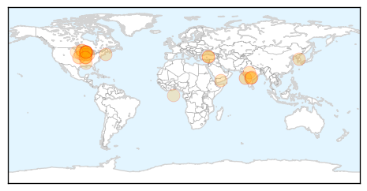
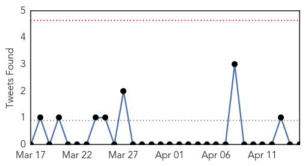

Influenza
30-Day Web Trend
0 alerts, 0 warnings

30-Day Twitter Trend
1 alerts, 0 warnings

Article Locations
Article Confidences

Top Articles:
- 0.972
- Bird Flu Returns to India
- 0.953
- DATCP implementing response to contain, eliminate avian influenza virus
- 0.922
- More Wisconsin farms released from avian flu quarantine
- 0.921
- Vets encouraging dog flu vaccine after Illinois outbreak
- 0.918
- Dog flu bites Midwest, causing concern among local vets
- 0.909
- Veterinarian Explains What Every Dog Owner Should Know About Disease
- 0.895
- Wisconsin Veterinary Diagnostic Lab monitoring bird flu outbreak
- 0.884
- Dog Flu Outbreak Worsens in Midwest
- 0.833
- Eight more cases of bird flu confirmed; threat could last years
- 0.824
- Bird flu: 60,000 chickens culled in Telangana in two days
- 0.813
- Chicago canine influenza epidemic traced to Asian strain
- 0.799
- Dog day care businesses hit by canine flu
- 0.786
- Minnesota officials: Bird flu threat could last years
- 0.772
- Bird flu outbreak in Thimphu camp city
- 0.754
- The Ducks Are Dying
- 0.751
- April 14, 2015 Archives
- 0.751
- April 14, 2015 Archives
- 0.722
- Avian flu outbreak triggers alert in Telangana
- 0.715
- Eight more cases of bird flu confirmed
- 0.644
- Bird flu outbreak could head eastward with fall migration
- 0.644
- Bird flu outbreak could head eastward with fall migration
- 0.634
- Dog flu spreading in the Midwest
- 0.616
- State chicken industry feels aftershocks
- 0.603
- Dog flu worries rise as infections increase in Midwest
- 0.582
- H5N2 Avian Flu Case Confirmed in Iowa County - Story
- 0.574
- H5N2 avian flu confirmed in Iowa
- 0.555
- Bird flu in Iowa turkey flock; sixth Midwest state
- 0.539
- Turkey growers look for end of influenza
- 0.518
- H5N2 strikes 8 more Minnesota farms, reaches Iowa
Top Tweets:
- 0.811
- Clinical findings in 10 children of H275Y influenza A(H1N1)pdm09 virus infection http://t.co/vJoLMBbMfr
Unknown
30-Day Web Trend
0 alerts, 0 warnings

30-Day Twitter Trend
0 alerts, 0 warnings

Article Locations

Article Confidences

Top Articles:
- 0.957
- Hawthorn Woods' Bark in the Park postponed due to dog flu
- 0.955
- Food poisoning cases in Sultanate at a minimal
- 0.945
- Niger isolates suspected bird flu farm as region takes precautions
- 0.944
- Health Experts Monitor Deadly Tick-Borne Virus
- 0.941
- NCDC to study Goa deaths due to mysterious virus
- 0.930
- What to Know About Antibiotic-Resistant Shigella Superbug
- 0.917
- Chicago Tribune
- 0.917
- Chicago Tribune
- 0.917
- Chicago Tribune
- 0.917
- Chicago Tribune
- 0.917
- Chicago Tribune
- 0.917
- Chicago Tribune
- 0.917
- Chicago Tribune
- 0.917
- Chicago Tribune
- 0.917
- Chicago Tribune
- 0.917
- Chicago Tribune
- 0.917
- Chicago Tribune
- 0.917
- Chicago Tribune
- 0.917
- Chicago Tribune
- 0.917
- Chicago Tribune
- 0.917
- Chicago Tribune
- 0.917
- Chicago Tribune
- 0.917
- Chicago Tribune
- 0.917
- Chicago Tribune
- 0.917
- Chicago Tribune
- 0.910
- The world windows to Thailand
- 0.823
- Medical researcher urges governments to prioritise elephantiasis
- 0.823
- Medical researcher urges government to prioritize elephantiasis
- 0.783
- An unusual version of a gene appears to protect against enteric fever
- 0.775
- Deadly Powassan virus on the rise
- 0.767
- Free flu clinic at the Cherry Auction
- 0.757
- Tuberculosis case at Denver's Metro State not an outbreak concern
- 0.705
- Fatal Brain Disease in US Man Likely Came from UK Beef
- 0.684
- Could a Norovirus Vaccine Become Reality?
- 0.683
- Cruel blow to sanctuary
- 0.681
- Update: Security and Humanitarian Consequences amid Conflict in Yemen - Yemen
- 0.680
- Ending the ‘Neglect’ in Neglected Tropical Diseases
- 0.663
- Hundreds of dogs sickened by flu strain in Midwest
- 0.632
- Telangana government confirms first bird flu outbreak in Thorrur
- 0.629
- Rat lungworm disease spreads fear across Hawaii Island
- 0.601
- Surveys miss majority of poisonings, underestimate cost by billions
- 0.599
- 14-member Sindh team briefed about Punjab health roadmap
- 0.598
- Q&A: What is listeria?
- 0.597
- Kienböck’s disease may progress to fragmentation within 6 months
- 0.589
- Health can tackle (and measure) inequities
- 0.588
- District hospitals given a pass
- 0.583
- What to know about recent recalls and listeria
- 0.580
- Montgomery County, Maryland, Horse Tests Positive for EHV-1
- 0.578
- CBCP exec: Many persons with HIV/AIDS come from broken families
- 0.577
- En Tanzanie, l’opposition rêve d’alternance
Showing top 50 articles...
Top Tweets:
-
No tweets found for Apr 15, 2015